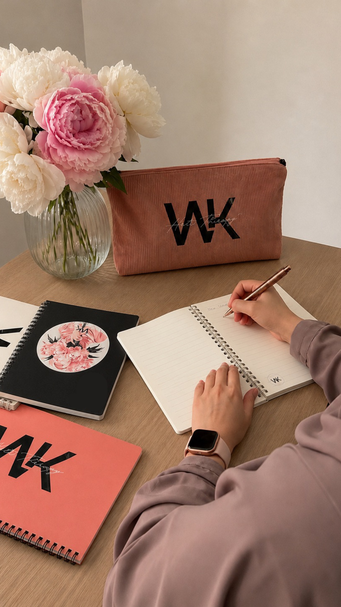
Entretien bien-être · écoute & orientation
Un échange entre femmes, en audio ou en visio, pour parler librement et explorer des pistes concrètes à votre rythme.
Je réserve mon soinBienvenue chez WK Hati Therapy
À Saint-Herblain, accordez-vous une parenthèse de douceur, d’écoute et de détente, dans un lieu pensé pour les femmes et les enfants.
Un moment pour soi, dans un lieu pensé pour vous accueillir.
✳À Saint-Herblain, près de Nantes.
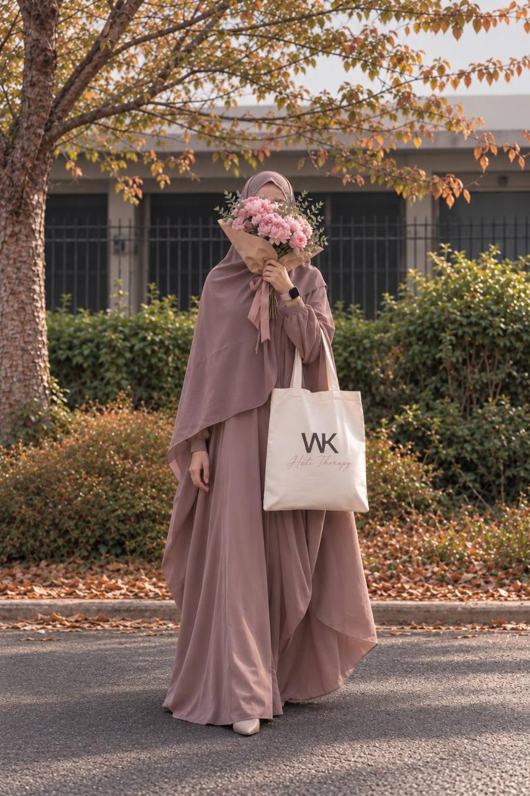
Faisons connaissance
Praticienne en facial cupping, narothérapie et massage bien-être, je suis également formée à la Biologique des émotions. Diplômée en esthétique, je me consacre depuis plus de dix ans aux techniques naturelles de beauté et de bien-être.
J’ai à cœur d’accueillir les femmes et les enfants avec simplicité et bienveillance. Je propose un accueil attentif, une écoute sans jugement et des gestes adaptés à la prestation choisie, pour faire de chaque rendez-vous un vrai moment pour soi.
Me contacter ↗★★★★★AVIS GOOGLE« Douce, professionnelle et très bienveillante. »
★★★★★AVIS GOOGLE« En confiance du début à la fin. »
★★★★★AVIS GOOGLE« Un endroit propre et apaisant. »
★★★★★AVIS GOOGLE« Très accueillante. »
★★★★★AVIS GOOGLE« Un moment de détente. »
Retrouvez ici les prestations, leur durée et leur tarif. Pour réserver votre séance, rendez-vous sur le site de réservation en ligne.

Un échange entre femmes, en audio ou en visio, pour parler librement et explorer des pistes concrètes à votre rythme.
Je réserve mon soin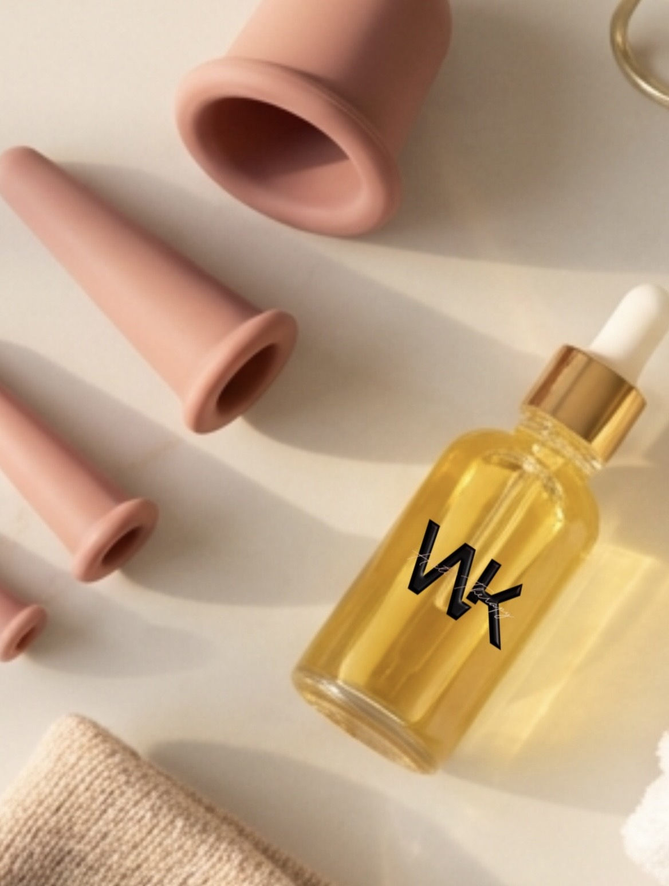
Une séance de cupping bien-être, avec placement des ventouses sur des zones ciblées et stimulation adaptée. Kit personnel requis ; disponible au cabinet pour 15 €.
Je réserve mon soin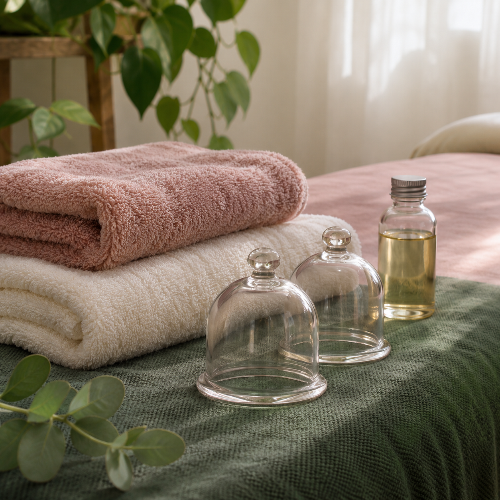
Une séance associant la pose de ventouses à un massage personnalisé, avec ou sans ventouses selon vos envies.
Je réserve mon soinUn rituel associant massage du dos sur mesure, pose de ventouses et geste de chaleur autour d’une serviette. Une expérience enveloppante qui invite à la détente. Kit personnel requis.
Je réserve mon soin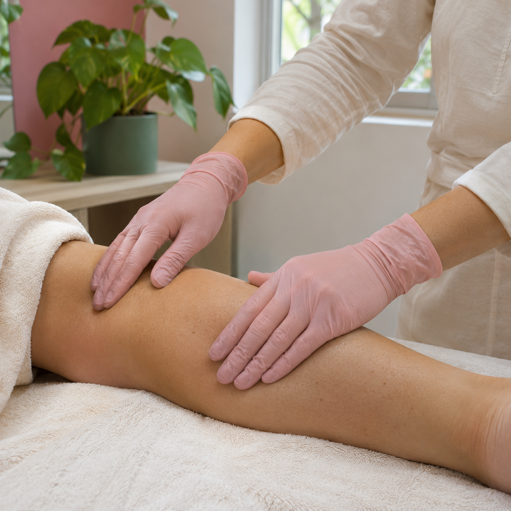
Un soin personnalisé des jambes associant plusieurs méthodes.
Je réserve mon soin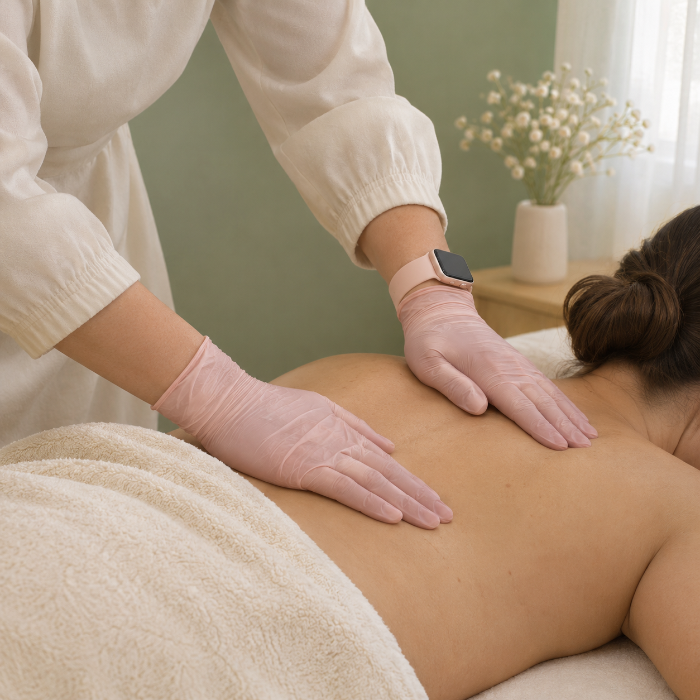
Massage sur mesure du haut ou du bas du corps, avec ou sans ventouses. Pour un massage du corps entier, réservez deux créneaux.
Je réserve mon soinOui, la hijama est possible pendant les règles, sauf en cas de grande fatigue. En cas de cycle irrégulier ou de contraception hormonale, informez Wided et votre professionnel de santé avant la séance.
La hijama est déconseillée pendant toute la grossesse. Elle est possible pendant l’allaitement. En cas de projet de grossesse, demandez conseil à votre professionnel de santé avant la séance.
Le cupping est une pratique de bien-être ; il ne traite pas l’anémie ou le manque de fer. En cas d’anémie, de carence en fer, de grande fatigue ou de baisse importante de la tension, demandez l’avis de votre professionnel de santé avant la séance. En cas de grande fatigue ou de baisse importante de la tension, la séance est déconseillée.
Non, la hijama n'est pas douloureuse. Une légère sensation de gêne peut parfois être ressentie, mais la séance est entièrement personnalisée et adaptée aux besoins et à la sensibilité de chacune.
Oui, les marques après une séance sont tout à fait normales. Leur intensité varie d'une personne à l'autre et elles disparaissent généralement au bout de quelques jours. Il est conseillé d'éviter l'exposition au soleil sur les zones concernées.
Oui, il est recommandé d'être à jeun (eau, aliments, cigarette) quelques heures avant la séance (3 à 4 heures), en cas de fortes chaleurs, il est bien évidemment possible de boire un peu d'eau.
Après une séance, il est recommandé de se reposer et d'avoir une alimentation variée et équilibrée. Les recommandations complémentaires vous seront précisées lors de votre séance, au cas par cas et selon vos besoins.
Il est recommandé d'attendre 4 semaines entre deux séances. Néanmoins, la fréquence exacte dépend de vos besoins et vous sera recommandée lors de votre rendez-vous.
Pour prendre rendez-vous, il vous suffit de consulter le site de réservation en ligne. Vous y trouverez le détail de chaque prestation, sa durée, son tarif ainsi que les prochaines disponibilités.
Il est recommandé de réserver entre 5 et 10 jours à l'avance afin de faciliter l'organisation de votre rendez-vous.
Les Bureaux du Sillon
1 avenue de l’Angevinière
6e étage
44800 Saint-Herblain
Retrouvez dans votre espace bien-être des articles WK pensés pour vous et à votre image.
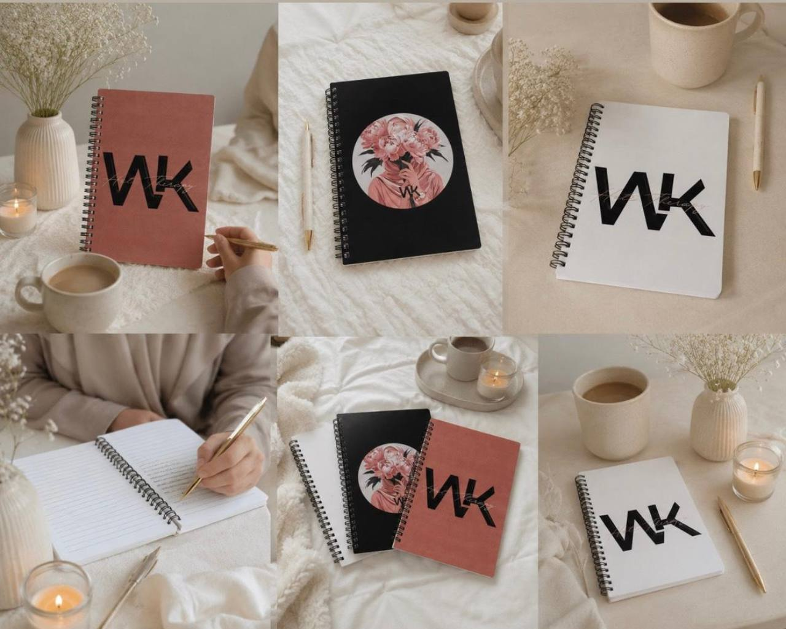
Des cahiers WK pour écrire, organiser ses idées et garder une trace de ses envies.
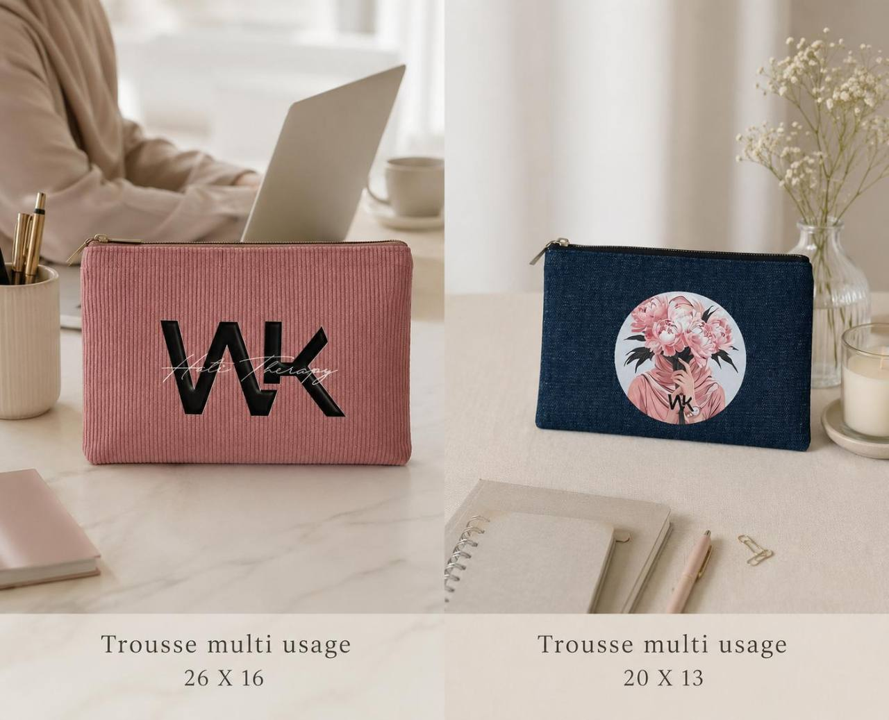
Des pochettes aux couleurs de WK, pratiques à glisser dans vos essentiels.
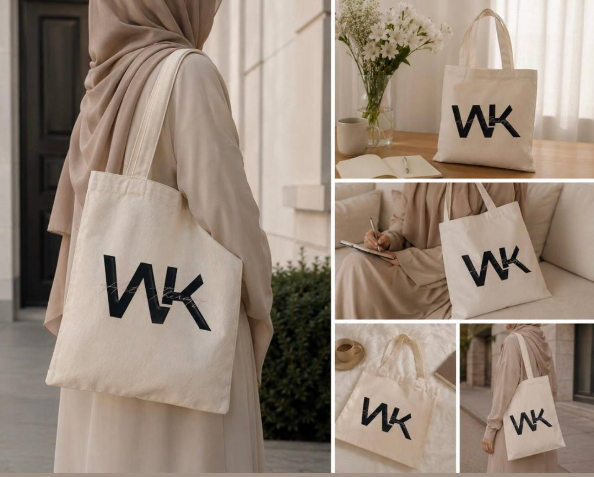
Un sac en toile signé WK, pensé pour vous accompagner au quotidien.
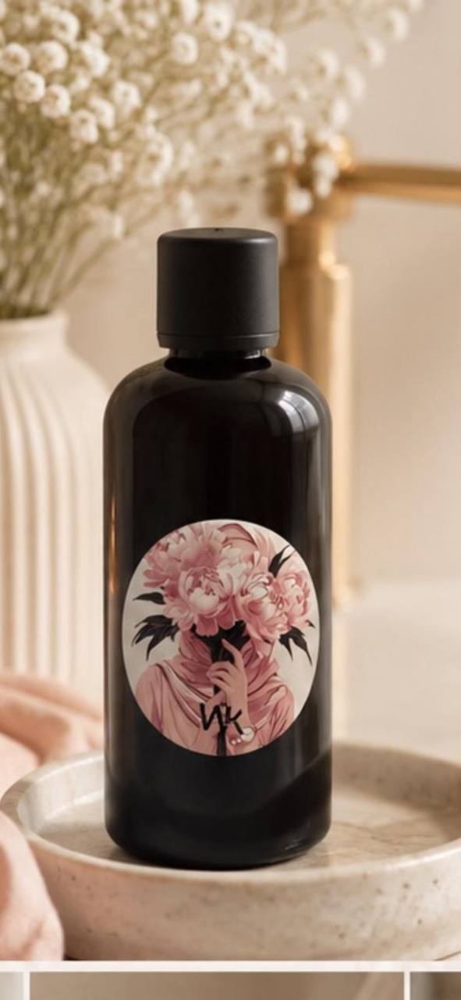
Huile de nigelle éthiopienne WK Hati Therapy, sélectionnée pour votre rituel de soin.
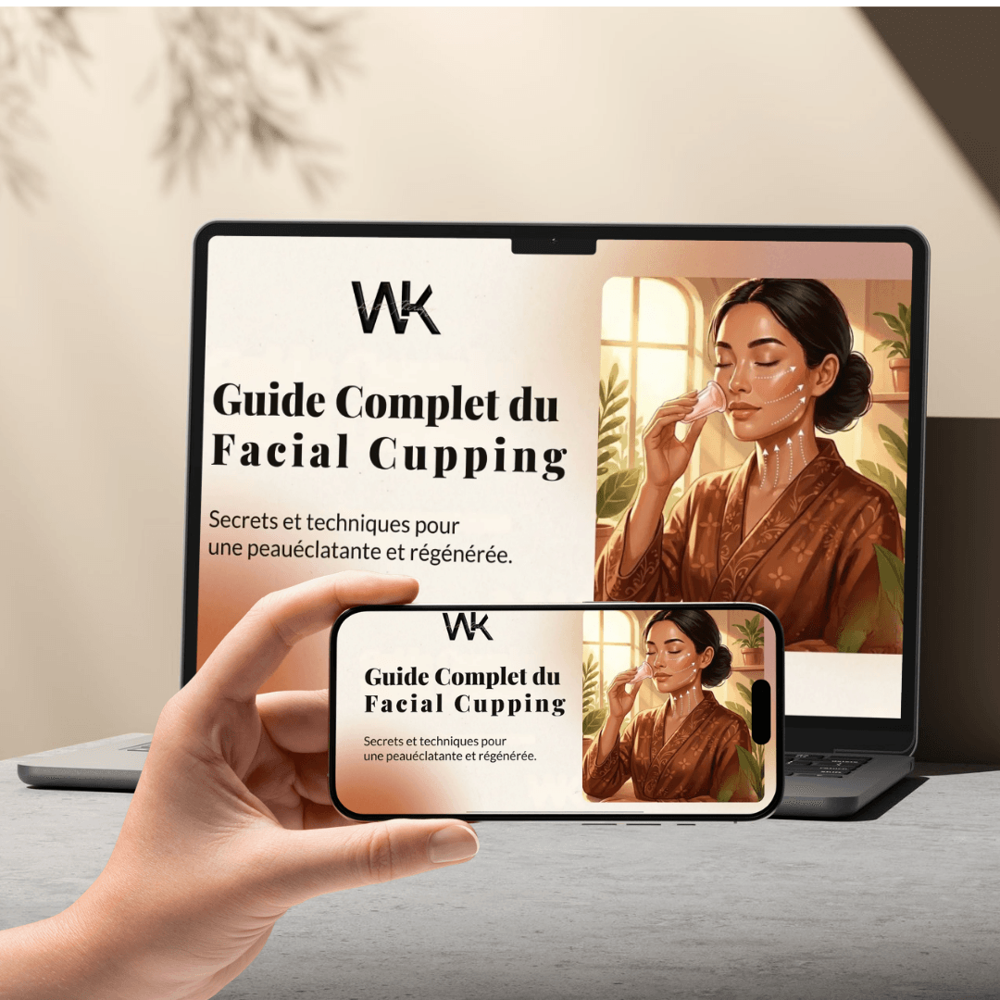
Découvrez le soin du visage aux ventouses grâce à un livret illustré, accompagné de photos et d’audios. Pas à pas, explorez les gestes du facial cupping et composez votre rituel beauté à la maison.
Le guide vous invite à prendre soin de l’apparence de votre peau en portant une attention particulière aux rides et ridules, à l’élasticité, à l’éclat et à la luminosité du teint.
WK Hati Therapy vous accueille à Saint-Herblain, près de Nantes.
Prendre rendez-vous ↗Les Bureaux du Sillon
1 avenue de l’Angevinière · 6e étage
44800 Saint-Herblain
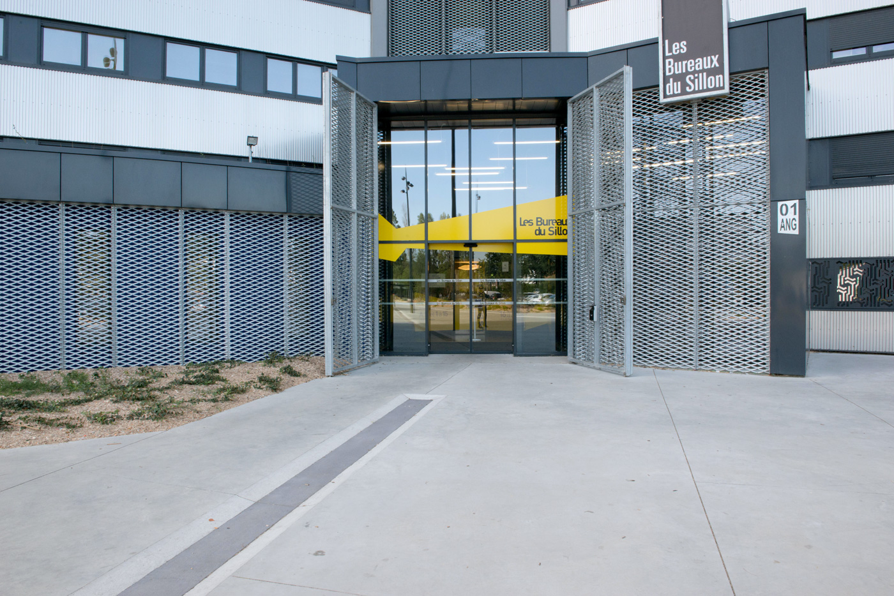
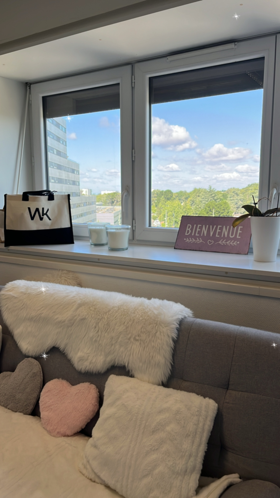
Arrêt Sillon de Bretagne à proximité : tramway ligne 3, Chronobus C8 et bus 50.
Préparer mon trajet sur Naolib ↗
Lundi – vendredi : 9 h – 18 h 30
Samedi : 10 h 30 – 17 h 30